library(ggplot2)
library(dplyr)
library(tidyr)
library(randomForestSRC)
if (requireNamespace("ggRandomForests", quietly = TRUE)) {
library(ggRandomForests)
} else if (requireNamespace("pkgload", quietly = TRUE)) {
pkgload::load_all(export_all = FALSE, helpers = FALSE, attach_testthat = FALSE)
} else {
stop("Install ggRandomForests (or pkgload for dev builds) to render this vignette.")
}
theme_set(theme_bw())Random Forest Regression with ggRandomForests
2026-06-23
Source:vignettes/ggRandomForests-regression.qmd
Work in progress
This vignette is under active development. Code examples and narrative may change before the next release.
Introduction
Random forests (Breiman 2001) are a non-parametric ensemble method that requires no distributional or functional assumptions on how covariates relate to the response. The method builds a large collection of de-correlated decision trees via bootstrap aggregation (bagging) and random feature selection, then averages their predictions to produce a stable, low-variance estimator. The randomForestSRC package (Ishwaran and Kogalur 2024) provides a unified implementation for survival, regression, and classification forests.
ggRandomForests extracts tidy data objects from rfsrc fits and renders them with ggplot2 (Wickham 2016), making it straightforward to explore how a forest is constructed, which variables matter, and how the response depends on individual predictors.
This vignette demonstrates a complete random forest regression workflow on the Boston Housing data set (Harrison and Rubinfeld 1978; Belsley et al. 1980):
- Data exploration — EDA scatter panels, variable descriptions
- Growing the forest — fitting an RF, checking OOB error convergence
-
Variable selection — VIMP and minimal depth via
max.subtree() -
Dependence plots — variable dependence and partial dependence via
gg_variable()andgg_partial_rfsrc() - Variable interactions — conditioning plots and partial dependence surfaces
Data: Boston Housing Values
The Boston Housing data (Harrison and Rubinfeld 1978; Belsley et al. 1980) is a standard benchmark for regression. It contains data for 506 census tracts of Boston from the 1970 census. The objective is to predict the median value of owner-occupied homes (medv, in $1000s) from 13 predictors covering crime, zoning, industry, environmental quality, and housing characteristics. We use the copy from the MASS package (Venables and Ripley 2002).
data(Boston, package = "MASS")
Boston$chas <- as.logical(Boston$chas) # nolint: object_name_linter
st_labs <- c(
crim = "Crime rate by town",
zn = "Residential land zoned > 25k sq ft (%)",
indus = "Non-retail business acres (%)",
chas = "Borders Charles River",
nox = "Nitrogen oxides (10 ppm)",
rm = "Rooms per dwelling",
age = "Units built before 1940 (%)",
dis = "Distance to employment centers",
rad = "Highway accessibility index",
tax = "Property tax rate per $10,000",
ptratio = "Pupil-teacher ratio",
black = "Proportion of Black residents",
lstat = "Lower status population (%)",
medv = "Median home value ($1000s)"
)Exploratory data analysis
We plot each predictor against the response (medv), coloring by the sole categorical variable (chas, whether the tract borders the Charles River). A loess smooth highlights the marginal trend.
dta <- Boston |>
pivot_longer(c(-medv, -chas), names_to = "variable", values_to = "value")
ggplot(dta, aes(x = medv, y = value, color = chas)) +
geom_point(alpha = 0.4) +
geom_smooth(aes(x = medv, y = value), color = "grey30",
inherit.aes = FALSE, se = FALSE) +
labs(y = "", x = st_labs["medv"]) +
scale_color_brewer(palette = "Set2") +
facet_wrap(~variable, scales = "free_y", ncol = 3)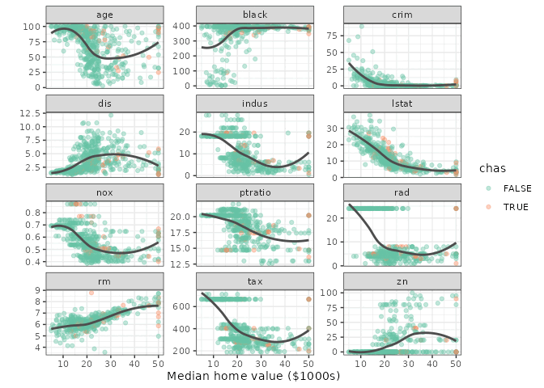
Even from this simple view, two relationships stand out: medv against lstat (lower status %) and medv against rm (rooms per dwelling). Keep those two in mind — we expect the random forest to rank them as the most important predictors, and the rest of the vignette comes back to check.
Growing a Random Forest
We grow a regression forest using all 13 predictors. The rfsrc() function detects the regression family from the continuous response.
rfsrc_Boston <- rfsrc(medv ~ ., data = Boston, # nolint: object_name_linter
ntree = 200, importance = TRUE, err.block = 5)
rfsrc_Boston#> Sample size: 506
#> Number of trees: 200
#> Forest terminal node size: 5
#> Average no. of terminal nodes: 66.97
#> No. of variables tried at each split: 5
#> Total no. of variables: 13
#> Resampling used to grow trees: swor
#> Resample size used to grow trees: 320
#> Analysis: RF-R
#> Family: regr
#> Splitting rule: mse *random*
#> Number of random split points: 10
#> (OOB) R squared: 0.86793604
#> (OOB) Requested performance error: 11.17085773The forest grew 200 trees, splitting on 5 randomly selected candidate variables at each node, and stopping at a minimum terminal node size of 5.
OOB error convergence
gg_e <- gg_error(rfsrc_Boston)
gg_e <- gg_e |> filter(!is.na(error))
class(gg_e) <- c("gg_error", class(gg_e))
plot(gg_e)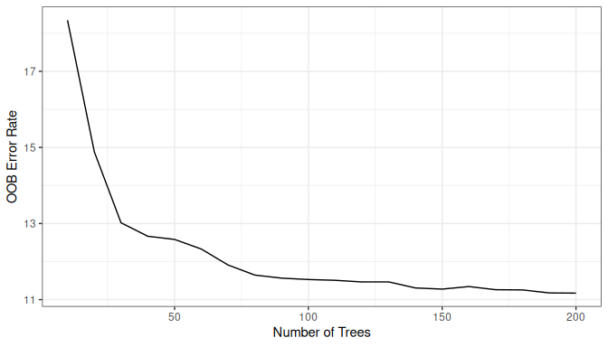
The error stabilizes well before 500 trees, indicating the forest is large enough for reliable predictions.
OOB predictions
plot(gg_rfsrc(rfsrc_Boston), alpha = 0.5) +
coord_cartesian(ylim = c(5, 49))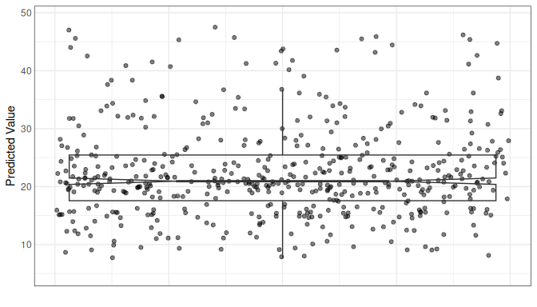
Each point is a single tract’s OOB prediction. The distribution is a sanity check — we are more interested in the why behind these predictions.
Variable Selection
Variable importance (VIMP)
VIMP, computed by randomForestSRC, measures the increase in OOB prediction error when a variable’s values are randomly permuted across the out-of-bag observations (Breiman 2001). Permutation severs the variable’s link to the response on purpose: if breaking that link hurts accuracy, the variable is carrying real signal. Large positive values mean the variable is essential; negative values suggest it is no more informative than noise.
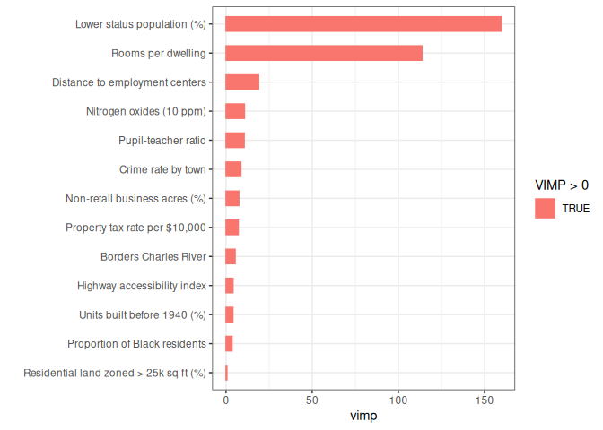
lstat and rm dominate, with a clear gap to the remaining predictors. All VIMP values are positive, indicating every predictor contributes at least marginally.
The permutation approach contrasts with varPro release-rule importance (Lu and Ishwaran 2024), available through gg_varpro(). Rather than perturbing data synthetically, varPro compares local estimators on the observed data directly: no permutation, no manufactured feature values. Because the two methods measure fundamentally different things, a variable can rank high under one and low under the other. When they agree, the evidence is strong; when they disagree, that disagreement itself is worth investigating, pointing either to a variable whose effect is highly non-linear or to one that matters only in combination with others.
Minimal depth
Minimal depth (Ishwaran et al. 2010) ranks variables by how close to the root node they first split, on average. Variables that partition large portions of the population early are considered most important.
md_Boston <- max.subtree(rfsrc_Boston) # nolint: object_name_linterThe threshold is 3.01, selecting 6 variables: crim, nox, rm, dis, ptratio, lstat.
Both VIMP and minimal depth agree on the dominance of lstat and rm. We use the minimal depth top variables for the remainder of the analysis.
xvar <- md_Boston$topvarsVariable Dependence
Variable dependence plots
Variable dependence shows each tract’s OOB predicted medv plotted against a predictor, with a loess smooth indicating the trend.
gg_v <- gg_variable(rfsrc_Boston)
plot(gg_v, xvar = xvar, panel = TRUE, alpha = 0.5) +
labs(y = st_labs["medv"], x = "")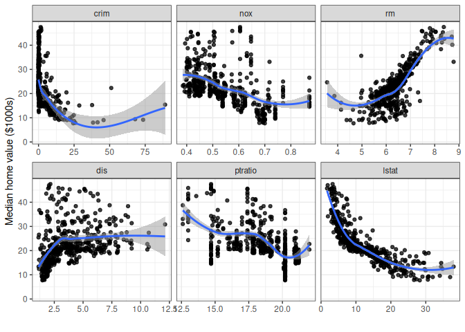
The panels confirm what EDA suggested: medv decreases sharply with lstat and increases with rm, both in strongly non-linear ways. The remaining variables show weaker but still discernible trends.
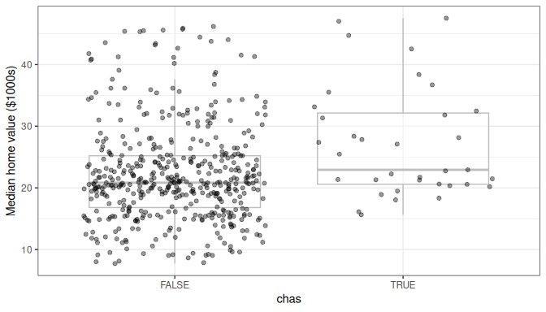
Most tracts do not border the Charles River, and the predicted value distributions largely overlap — consistent with chas ranking last in both VIMP and minimal depth.
Partial dependence
Partial dependence integrates out the effects of all other covariates, giving a risk-adjusted view of each predictor’s marginal effect (Friedman 2001):
We use gg_partial_rfsrc(), which calls randomForestSRC::partial.rfsrc() directly and returns a gg_partial_rfsrc object. The quickest path to a figure is plot(pd), which sorts out continuous and categorical variables for you. When you want to control the layout yourself, the underlying data is in pd$continuous.
pd <- gg_partial_rfsrc(rfsrc_Boston, xvar.names = xvar)
# Quick S3 plot — works out of the box for the standard regression case
plot(pd)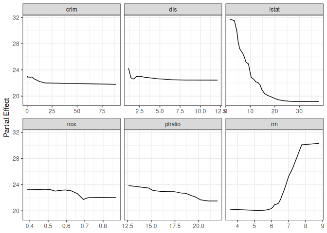
For a publication-ready layout with custom axis labels, access the underlying data frame directly:
ggplot(pd$continuous, aes(x = x, y = yhat)) +
geom_line(color = "steelblue", linewidth = 1) +
facet_wrap(~name, scales = "free_x") +
labs(y = st_labs["medv"], x = "") +
theme_bw()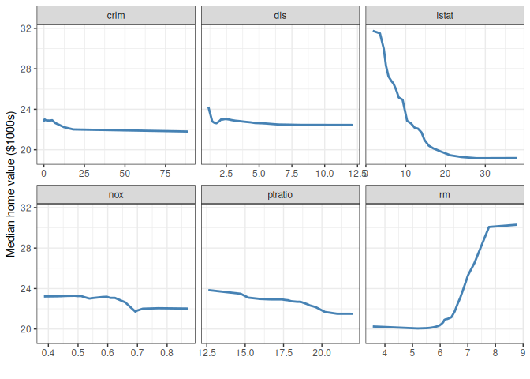
lstat shows a strongly concave relationship, while rm stays flat below about 6 rooms and then climbs sharply. Shapes like these are awkward to capture with a simple parametric transform, since you would have to guess the form in advance, but the random forest picks them up on its own.
Variable Interactions and Conditioning Plots
Conditioning on a categorical variable
The simplest coplot conditions on a categorical variable. Here we examine medv vs. lstat, split by Charles River status:
gg_v$chas_label <- ifelse(gg_v$chas, "Borders Charles River",
"Does not border")
plot(gg_v, xvar = "lstat", alpha = 0.5) +
labs(y = st_labs["medv"], x = st_labs["lstat"]) +
theme(legend.position = "none") +
facet_wrap(~chas_label)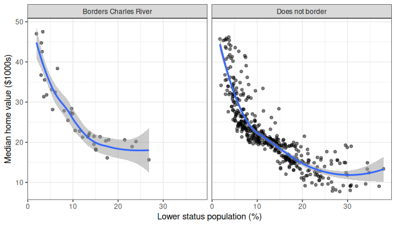
The decreasing trend holds in both groups, with slightly higher values along the Charles River at every lstat level.
Conditioning on a continuous variable
To investigate the lstat–rm interaction, we bin rm into six quantile groups using quantile_pts() and facet:
rm_pts <- quantile_pts(rfsrc_Boston$xvar$rm, groups = 6, intervals = TRUE)
gg_v$rm_grp <- cut(rfsrc_Boston$xvar$rm, breaks = rm_pts)
levels(gg_v$rm_grp) <- paste("rm in", levels(gg_v$rm_grp))
plot(gg_v, xvar = "lstat", alpha = 0.5) +
labs(y = st_labs["medv"], x = st_labs["lstat"]) +
theme(legend.position = "none") +
scale_color_brewer(palette = "Set3") +
facet_wrap(~rm_grp)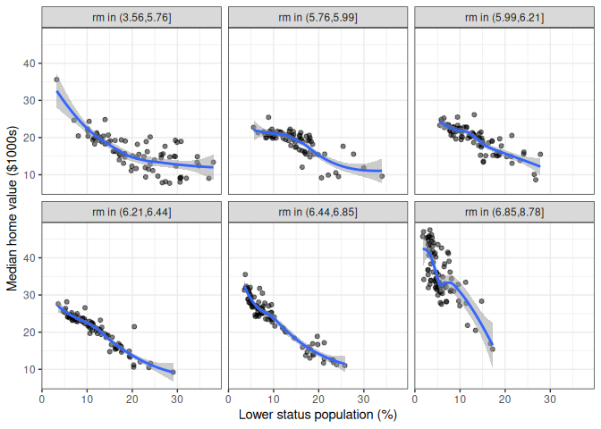
Median values decrease with lstat within every rm group, but the intercept shifts upward with more rooms. Smaller homes in low-lstat (high-status) neighborhoods still command high prices.
The complement view — medv vs. rm, conditional on lstat groups — completes the picture:
lstat_pts <- quantile_pts(rfsrc_Boston$xvar$lstat, groups = 6,
intervals = TRUE)
gg_v$lstat_grp <- cut(rfsrc_Boston$xvar$lstat, breaks = lstat_pts)
levels(gg_v$lstat_grp) <- paste("lstat in", levels(gg_v$lstat_grp))
plot(gg_v, xvar = "rm", alpha = 0.5) +
labs(y = st_labs["medv"], x = st_labs["rm"]) +
theme(legend.position = "none") +
scale_color_brewer(palette = "Set3") +
facet_wrap(~lstat_grp)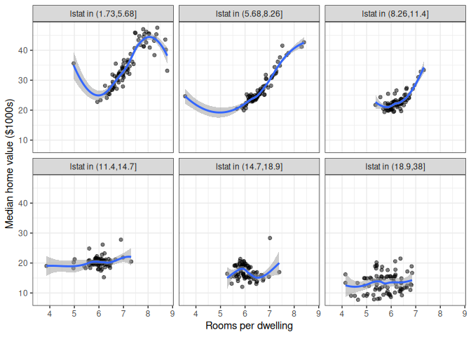
The rm effect is strongest in low-lstat tracts (bottom-left panels) and nearly flat in high-lstat tracts, confirming a meaningful interaction.
Partial Dependence Surface
To visualize the joint partial dependence of medv on lstat and rm, we compute partial dependence on a grid: 10 values of rm, each evaluated at 25 points along lstat.
rm_grid <- quantile_pts(rfsrc_Boston$xvar$rm, groups = 10)
surface_list <- lapply(rm_grid, function(rm_val) {
newx <- rfsrc_Boston$xvar
newx$rm <- rm_val
pd_rm <- gg_partial_rfsrc(rfsrc_Boston, xvar.names = "lstat", newx = newx)
df <- pd_rm$continuous
df$rm <- rm_val
df
})
surface_df <- bind_rows(surface_list)
ggplot(surface_df, aes(x = x, y = rm, fill = yhat)) +
geom_tile() +
scale_fill_viridis_c(name = "Median Value\n($1000s)") +
labs(x = "Lower Status (%)", y = "Rooms per Dwelling") +
theme_bw()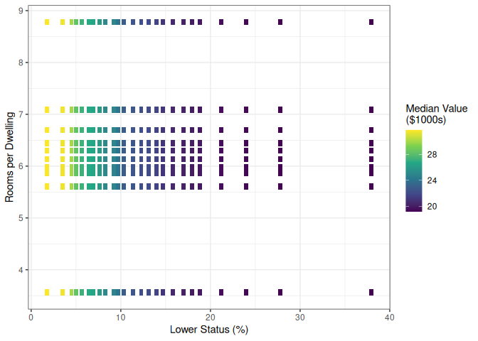
The surface confirms the strong interaction: home values are highest when lstat is low and rm is high (upper-left corner), dropping steeply along both axes. The non-planar curvature — particularly the sharp step near rm = 7 — demonstrates the kind of complex, non-linear structure that random forests capture naturally.
Conclusion
We have walked a full random forest regression analysis with randomForestSRC and ggRandomForests, and the pieces line up:
-
gg_error()showed the OOB error settling well before 500 trees. - VIMP (
gg_vimp()) and minimal depth (max.subtree()) agreed on the same story:lstatandrmdominate, with a clear gap to everything else. -
gg_variable()traced strongly non-linear predictor–response curves, the same shapes the raw-data EDA hinted at. - Partial dependence from
gg_partial_rfsrc()gave the risk-adjusted version of those curves: concave forlstat, threshold-like forrm. - Conditioning plots and the partial dependence surface pulled out the
lstat–rminteraction, with the room-size effect strongest in high-status tracts.
Notice the pattern in all of this. Each gg_*() function returns a tidy object (often a data frame, sometimes a small list of data frames); the plotting is a separate step. Use the package’s plot() methods when the default figure is what you want, and reach for ggplot2 directly when it is not.
References
Belsley, David A., Edwin Kuh, and Roy E. Welsch. 1980. Regression Diagnostics: Identifying Influential Data and Sources of Collinearity. John Wiley & Sons. https://doi.org/10.1002/0471725153.
Breiman, Leo. 2001. “Random Forests.” Machine Learning 45 (1): 5–32. https://doi.org/10.1023/A:1010933404324.
Friedman, Jerome H. 2001. “Greedy Function Approximation: A Gradient Boosting Machine.” The Annals of Statistics 29 (5): 1189–232. https://doi.org/10.1214/aos/1013203451.
Harrison, David, and Daniel L. Rubinfeld. 1978. “Hedonic Housing Prices and the Demand for a Clean Environment.” Journal of Environmental Economics and Management 5 (1): 81–102. https://doi.org/10.1016/0095-0696(78)90006-2.
Ishwaran, Hemant, and Udaya B. Kogalur. 2024. randomForestSRC: Fast Unified Random Forests for Survival, Regression, and Classification (RF-SRC). https://cran.r-project.org/package=randomForestSRC.
Ishwaran, Hemant, Udaya B. Kogalur, Eiran Z. Gorodeski, Andy J. Minn, and Michael S. Lauer. 2010. “High-Dimensional Variable Selection for Survival Data.” Journal of the American Statistical Association 105 (489): 205–17. https://doi.org/10.1198/jasa.2009.tm08622.
Lu, M., and H. Ishwaran. 2024. “Model-Independent Variable Selection via the Rule-Based Variable Priority.” arXiv Preprint. https://arxiv.org/abs/2409.09003.
Venables, William N., and Brian D. Ripley. 2002. Modern Applied Statistics with S. 4th ed. Springer. https://doi.org/10.1007/978-0-387-21706-2.
Wickham, Hadley. 2016. ggplot2: Elegant Graphics for Data Analysis. 2nd ed. Springer. https://doi.org/10.1007/978-3-319-24277-4.